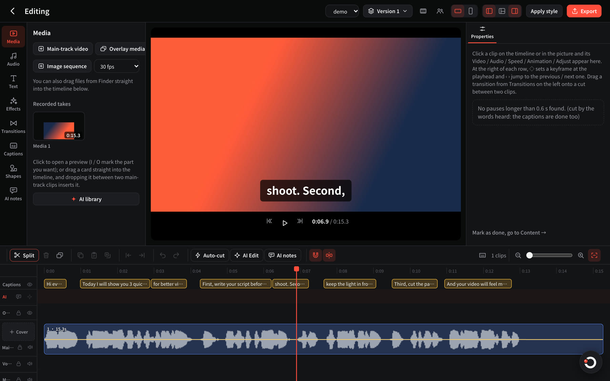
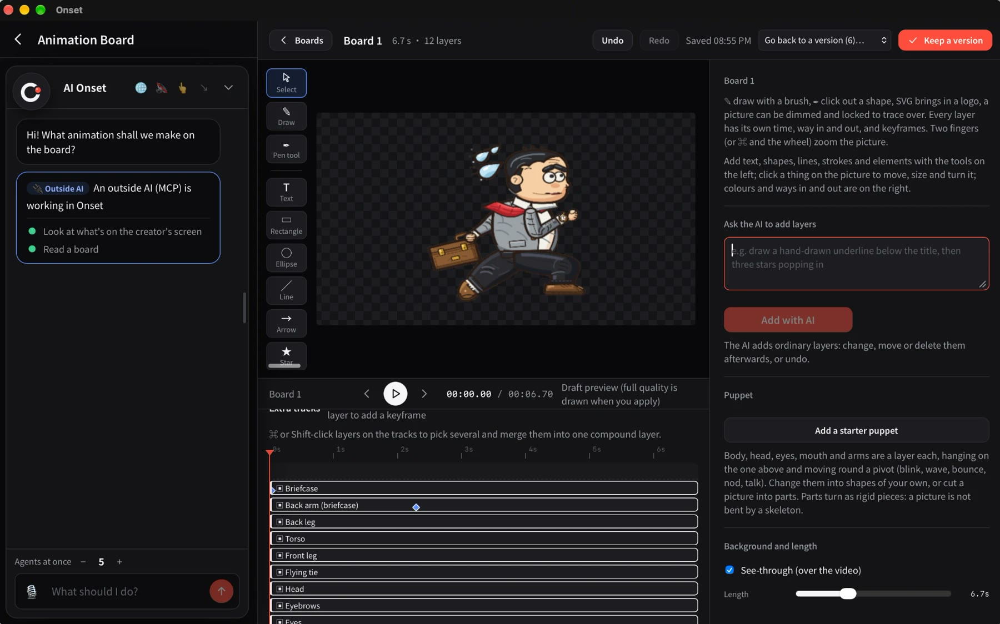
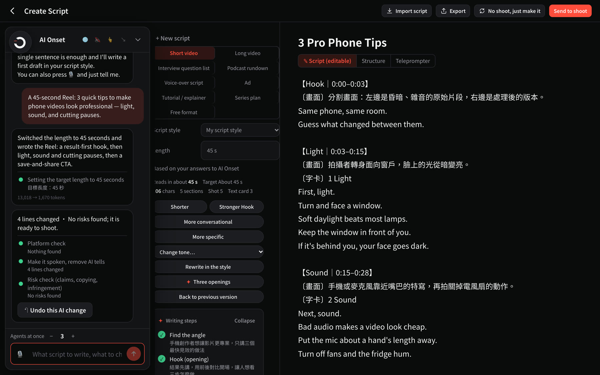
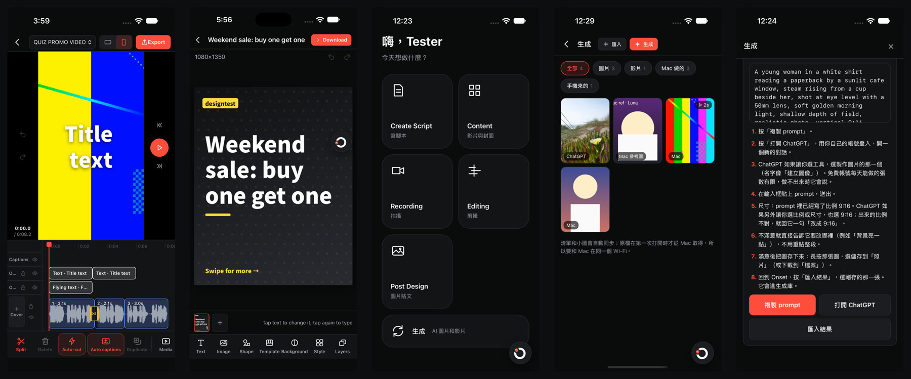
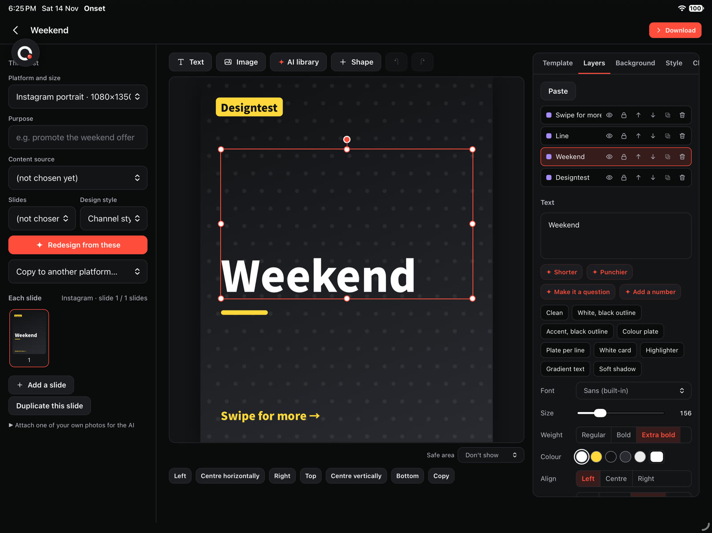
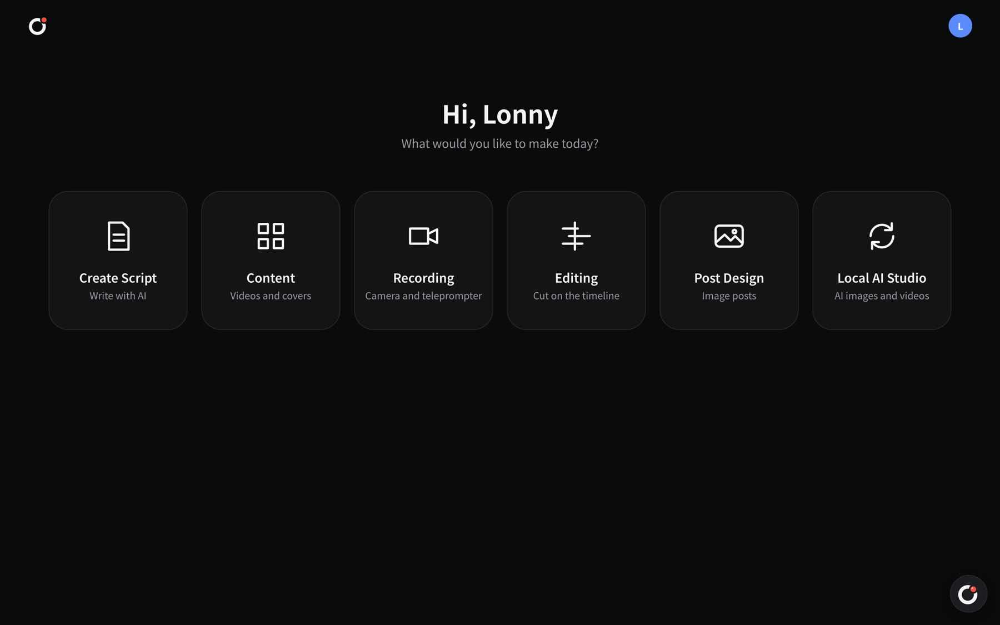

Onset 3.0
처음부터 다시 만든 크리에이터 제작 스튜디오. 대본, 촬영, 편집, 커버와 게시물 디자인, AI 생성까지 하나의 앱에서. 하나의 코드로 Mac 앱과 iPhone / iPad 앱을 만들고 오프라인 우선으로 동기화. 모든 화면의 AI Onset은 화면을 보고, 웹을 검색하고, 음성으로 대화하며 앱의 모든 기능을 눈앞에서 한 단계씩 실행. 언제든 멈추고 한 번에 되돌릴 수 있음.
앱 하나, 기기 세 가지Mac, iPhone, iPad가 오프라인에서도 동기화되며, 외출 중에도 집의 Mac에 연결할 수 있습니다.
AI Onset 어시스턴트모든 페이지에서 함께합니다. 화면을 보고, 웹에서 자료를 찾고, 음성으로 대화하며, 한 단계씩 보여 주고 언제든 멈출 수 있습니다.
대본부터 완성본까지AI 대본 작성, 프롬프터 촬영, CapCut 방식 편집, Auto-cut, 자동 자막.
촬영 없이도 영상 제작AI가 무료 소스를 찾고, 로컬과 클라우드 생성, 키네틱 텍스트, 애니메이션 보드를 지원합니다.
커버와 게시물 디자인템플릿 35종, iPhone 혼자서도 Mac 연결 없이 레이아웃을 짤 수 있습니다.
스타일 팩과 다국어자막, 템플릿, 폰트, 음악을 한 패키지로 가져가고, 인터페이스는 6개 언어를 지원합니다.
전체 기능 (펼치기)
- Mac 앱과 iPhone / iPad 앱(Tauri 2 + Swift): 하나의 프로그램에 세 가지 스킨; 휴대폰에서는 AVFoundation 출력, Apple Speech 받아쓰기, Apple Vision 배경 제거, Image Playground 이미지 생성 사용
- 동기화와 릴레이: QR 코드로 페어링, 오프라인 우선이며 양쪽에서 수정하면 두 버전을 모두 보존; 외부에서 4G / 5G로도 Cloudflare Worker + Durable Objects를 통해 종단 간 암호화로 집의 Mac에 연결
- AI Onset: 모든 페이지에 있는 AI 어시스턴트로 화면과 커서를 보고, 웹을 검색하고, 음성으로 대화; 모든 기능을 하나의 액션 목록으로 모았고, 에이전트 1~10개를 동시에 나눠 일을 시킬 수 있으며 각 에이전트는 색깔 커서가 되어 수정 중인 곳으로 날아감
- MCP 원클릭 설치: Claude Desktop, Claude Code, ChatGPT / Codex, Cursor 등 외부 AI가 Onset을 직접 조작할 수 있고, 모든 단계가 화면에 표시됨
- Create Script: AI가 여섯 단계로 보여 주며 작성 — 앵글, Hook, 스타일에 맞춘 초안, 플랫폼 점검, 구어체 다듬기(AI 티 제거), 리스크 점검(의료 문구, 표절); 포맷 9종, 스타일 36종
- Recording: 목소리를 따라가는 프롬프터(5개 언어), 음성 명령, 블루투스 리모컨 키, 카운트다운; iPhone을 Mac의 카메라로 쓰거나 원격 카메라로 써서 멀티캠 촬영 가능
- CapCut 방식 편집기: 키프레임, 전환 39종, 마스크, LUT와 HLG / Log → 709, 속도 곡선, 자막 20종과 노래방 자막, 수십 종의 키네틱 텍스트, Three.js / Godot 카드, 로열티 프리 음악과 효과음 내장
- Auto-cut과 AI Edit: 영상 전체를 한 번 듣고 편집, 재촬영 자동 탐지, 챕터별 편집, 챕터 카드, 핵심 구간 확대; 긴 영상을 여러 개의 Shorts로 자동 분할
- 수 시간 분량의 멀티캠 팟캐스트: 외장 하드를 복사 없이 바로 읽고, 소리 기준으로 정렬하고, 말하는 사람을 판단해 자동으로 화면 전환, 출력 음량 통일(−14 / −16 LUFS)
- 촬영 없이 만들기: 대본만 있어도 영상이 나오며 모든 문장에 화면을 입힘 — AI가 자료를 찾아 무료 라이선스 소스를 고르고, AI 이미지를 그리거나 애니메이션 카드를 제작; 시작 전에 총 소요 시간을 예측하고 작업 중에는 남은 시간을 표시
- 키네틱 타이포 샷: 한 박자에 큰 글자 하나, 카메라 워크, 전환, 3D 소품, 가짜 앱 화면; EffectCraft로 내보내기 가능
- 애니메이션 보드: AI가 먼저 계획한 뒤 진짜 일러스트를 그리고 뼈대를 넣어 움직임; 프레임 단위 애니메이션, 패턴 반복, 3D 입체 글자, 직접 수정도 가능
- AI 생성: 로컬(MiniMax H3 영상, Qwen Image, 자체 LoRA)과 클라우드 Higgsfield, Theater; Theater는 먼저 견적을 내고 동의해야 시작
- 커버, 게시물, 브랜딩 스타일: 템플릿 35종, 곡선 텍스트, 캐러셀; 채널 고유의 인트로·아웃트로, 이름 자막, 챕터 카드, 워터마크; iPhone 혼자서도 Mac 연결 없이 레이아웃 가능
- 스타일 팩과 스킨: 자막, 템플릿, 폰트, 음악을 한 패키지로 가져가고 앱 이름, 아이콘, 색상까지 바꿀 수 있음(Ed25519 서명); 프로젝트를 .onsetpack으로 묶어 공유
- 계정과 라이선스: Cloudflare Worker + D1 계정 서비스, 신청, 승인, 기기별 라이선스; 인터페이스는 번체 중국어, 간체 중국어, 영어, 말레이어, 일본어, 한국어 6개 언어 지원
- 출력: MP4 / MOV / MP3 / WAV, CapCut, FCPXML, Premiere XML, FilmCraft 프로젝트 파일로도 내보내기 가능
ReactTypeScriptViteNode helperFFmpegWhisperDemucsClaude CLITauri 2 / RustSwiftCloudflare Workers · D1 · Durable ObjectsMLX WhisperWebGL / Three.jsMCP






